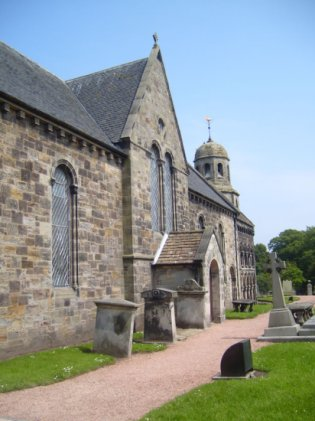

07/Mar/2017 Leuchars CC DRAFT minutes from 7.2.17 meeting
16/Dec/2016 Post Office revamp
Attachment - it looks like they want to revamp the Post Office to a more open-plan style and extend the opening hours, i.e. staying open at lunchtimes. Work would be done Feb/March 2017.
Feedback can be given by going to postofficeviews.co.uk and entering the branch code 17484499 . (There are a number of other ways to give feedback shown on the attached.)
Deadline for feedback is 29 December 2016.
22/Sep/2016 Community Council
On Friday 16th September 2016 a public meeting was called to find a knew Chairman and Treasurer for Leuchars Communty Council as the currant Chair and Treasurer were retiring after 14 and 12 years respectively.
New Chair is Steve Simpson and Treasurer is Marianne Donaldson
23/Jul/2016 Coffee with Cops
23/Jul/2016 Leuchars Community Council: DRAFT minutes from 5.7.16
Bingo - first Thursday of the month
This is a great place to advertise upcoming community events. If you know of a future event that you would like to see listed here please get in touch.
Need a break? Give your eyes a rest, get some fresh air and gentle excercise... take a walk or cycle around the village.
Maybe even venture into Tentsmuir National Nature Reserve or along its sandy beach.

Standing proudly above the picturesque village of Leuchars in the historic Kingdom of Fife is the truly remarkable St Athernase Church. read more >>

Earlshall Castle, near Leuchars, has its origins in the 16th C. It is currently lived in as a privately owned home, not open to the public. It gardens are quite spectacular. read more >>